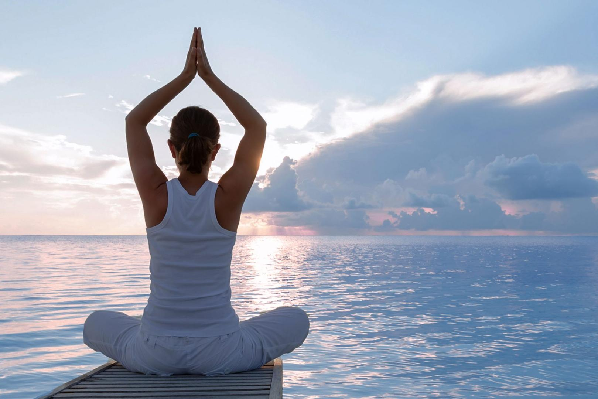

CТЕП-АЭРОБИКА

Это аэробика с использованием степ-платформы. Это великолепный способ тренировки! Степ-аэробика – это не только тренировка сердечно-сосудистой и дыхательной системы, но и эффективное жиросжигание! Особенно благотворно влияет на мышцы ягодиц и бедер, предотвращает целлюлит, хорошо развивает координацию.
Йога
Йога — это не только гибкость, умение свернуться в диковинный калач и коснуться своих пальцев, но и способ обрести умиротворение и позитивное состояние разума. Медитируйте. Тарлингтон называет медитацию самомассажем, но предпочитает не сидеть часами в позе лотоса, а совмещать её с другими видами деятельности.
Фитнес
Cиловая тренировка, проходящая в аэробном режиме с элементами функционального тренинга и с использованием различного спортивного оборудования. Способствует активному развитию основных поверхностных мышц и глубоко лежащих мышц-стабилизаторов. Тренировка позволяет укрепить мышцы спины, развить гибкость и эластичность мышц и связок.